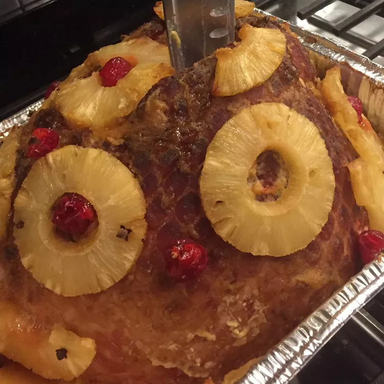

Rum Ham

Description
Ingredients
- 1 (5 pound) bone-in fully-cooked ham
- 1 (15 ounce) can pineapple slices, undrained
- 4 fluid ounces orange-flavored rum (such as Bacardi O®), divided
- 2 tablespoons cornstarch, or as needed
Steps
- Preheat the oven to 300 degrees F (150 degrees C).
-
Place ham into a roasting pan. Spread Dijon mustard over top and sides
of ham in an even coat; sprinkle ham with brown sugar. Press brown sugar
onto ham with your hands. Place pineapple slices onto ham, securing them
to the top and sides with cloves. Place any unused pineapple slices into
the bottom of the roasting pan and pour pineapple juice and 2 ounces
orange-flavored rum.
-
Bake in the preheated oven until ham is heated through and brown sugar
has begun to glaze onto the meat, about 1 hour. Remove ham from the oven
and pour remaining 2 ounces of orange rum over the ham; carefully light
the rum on fire with a match. The flames will help the glaze to adhere
to the meat.
-
Continue baking until an instant-read meat thermometer inserted into the
thickest part of the ham, not touching bone, reads at least 140 degrees
F (60 degrees C), about 1 more hour. Let ham rest for 10 minutes before
serving. Transfer ham to a serving platter, leaving pan drippings in the
roasting pan.
-
Stir cornstarch and water together in a small bowl until smooth; whisk
cornstarch into pan drippings. Place roasting pan over medium-low heat
and whisk until pan juices thicken, about 5 minutes. Serve with ham.
Return to Home Page